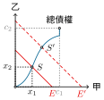
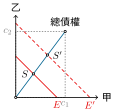
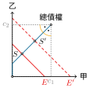
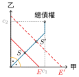
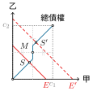

2024-03-27
「分配」是一個有趣的問題。你可能知道「你切、我選」是兩個人分蛋糕最公平的方式，但如果今天運氣沒有這麼好，不是突然有一個蛋糕可以讓大家吃，而是有人明明欠你 \(3/4\) 個蛋糕、又欠你朋友 \(1/2\) 個蛋糕，卻只有 \(2/3\) 個蛋糕可以還的時候，要怎麼分才「公平」呢？在你回答一個你認為「唯一且公平得不得了」的分法之前，我們要先解開一組來自猶太經典《塔木德》的千年歷史的謎題。
《塔木德》這個名字在希伯來文中是「教導、學習」的意思，其中除了記載著與猶太教的宗教哲學，同時也紀錄了猶太人所用的律法、條例和傳統。但由於這部經典是將原本口耳相傳的知識記錄下來，所以有些故事似乎少了一些解釋，因此我們就有了這組千年謎題。
謎題由兩個故事組成，第一個故事是這樣的：小明跟小華正在為一件價值 \(200\) 元的昂貴服飾吵架； 1 小明說他有整件衣服的債權，小華則說他有半件衣服的債權。這時《塔木德》說，第一個人當獲得 \(150\) 元，第二個人當獲得 \(50\) 元。我們把這個分配方式寫成表格的樣子：
塔木德（一）
小明 小華 債權 \(200\) \(100\) 分得 \(150\) \(50\)
這到底是什麼神奇的分法？到底公平在哪裡？在你想破頭之前，我們再來看看第二則故事：小張娶了三個老婆， 2 小張在死前分別與三位妻子決議要分給他們多少財產，但是小張死後發現他的財產不足以滿足他對所有人的承諾。這時《塔木德》就給出了以下的建議分配方式：
塔木德（二）
小美 小玲 小月 債權 \(100\) \(200\) \(300\) 遺產 \(100\) 元 分得 \(100/3\) \(100/3\) \(100/3\) \(200\) 元 分得 \(50\) \(75\) \(75\) \(300\) 元 分得 \(50\) \(100\) \(150\)
這下子問題又更複雜了，不只是現在分配的結果怪怪的，還發現他會因為遺產的大小而有不同的分配規則！
我們的工作有兩個：
也就是說，我們不能只是胡亂套上一個剛好跟塔木德結果吻合的函數，還要說出背後一套讓人滿意的道理。而在完成這兩個工作之後，我們可能就會對「公平」這個概念有更多的認識。試著想想看吧！
在揭曉謎底之前，我們先來算算如果用你一開始想到的那個「唯一且公平得不得了」的分法會得到怎麼樣的結果。我相信大部分人想到的分法就是「按照比例分」，我們把它稱作比例法：也就是說你分到的部分就是資產乘上你所握有的債權佔總債權的比例。 3 寫成表格可能比較清楚：
比例法
小明 小華 債權 \(200\) \(100\) 債權比例 \(2/3\) \(1/3\) 分得 \(133.\bar{3}\) \(66.\bar{6}\)
寫出來之後我們再想想，我們為什麼會這麼直觀地認為用比例法就一定是公平的呢？是因為無論財產數量是多少，我都一定可以分到一樣的比例嗎？那跟比例法比起來，使用塔木德（一）又不公平在哪裡？我猜你現在可能還是看不出來塔木德（一）到底公平在哪裡，那我就告訴你吧：塔木德（一）讓兩個人都一樣損失 \(50\) 元。平心而論，在某些情況中讓大家都損失一樣多說不定更「公平」：不但讓大家覺得有自己有拿到應得的份，也看到其他人都做出同等的犧牲，這樣不是很公平嗎？
這類型的問題被統稱為「破產問題」（bankruptcy problem）。破產問題指的是有一群人握有債權，而這些人的總債權大於債務人的剩餘資產，所以我們必須透過一些規則——在經濟學上稱為「機制」（mechanism）——來決定誰可以分得多少財產。在解決破產問題時，有很多比例法以外的分配機制，而這些機制都在某種程度上被認為是「公平」的。像是塔木德（一）的分配機制可以被稱為同等損失法，就不失為一個非常「公平」的分配機制。也就是說，「公平」並沒有所謂客觀的定義；在不同場合下，大家會對「公平」有不同的見解。所以只要能夠說出一個讓大家都心服口服的分配方式，那麼這個分配方式就是「公平」的。
在進入下一個塔木德的謎題之前，我們可以透過對「公平」與「分配」新的理解來定義什麼叫做一個「分配機制」。假設有 \(n\) 個人，第 \(i\) 個人握有債權 \(c_i\)，這 \(n\) 個人要瓜分剩餘財產 \(E\)，而第 \(i\) 個人最後會分到 \(x_i\) 塊錢。而一個「分配機制」做的事情就是給定一組債權跟資產 \((c_1,...,c_n;E)\)，它就會幫我們生出一串財產分配 \((x_1,...,x_n)\)，我們稱這一串 \((x_1,...,x_n)\) 為一組解。雖然「公平」並沒有唯一的定義方式，但是顯然 \((x_1,...,x_n)\) 也不是愛怎麼生就怎麼生，有一些對「公平」最基本的要求是我們認為所有「分配機制」都要遵守的： 4
當然，如果資產 \(E\) 大過總債權，那也沒有所謂的「破產問題」可言了，所以我們要求總債權不可以小於資產 \(E\)。我相信這幾個條件應該是所謂「公平」最基本的要求，要是一個機制連這些條件都不符合，誰都不會同意這個機制是「公平」的。
有了這幾個基本的要求之後，我們可能要重新思考《塔木德》第一道謎題的解法：同等損失法能夠一直適用嗎？這個方法會符合我們對「公平」最低限度的要求嗎？考慮一個類似於塔木德（一）的情境，但是那件衣服的價值只剩下 50 元時，這兩個人應該各分得多少呢？假設兩個人都一樣要損失 \(\lambda\) 元，那麼同等損失法會要求 \[ \underbrace{ \left( \underset{c_1}{200} - \lambda \right) }_{x_1} + \underbrace{ \left( \underset{c_2}{100} - \lambda \right) }_{x_2} = \underset{E}{50} \implies \lambda = 125 \] 也就是兩個人都要一樣損失 \(125\) 元。可是有一個人只有 \(100\) 元的債權，怎麼能損失 \(125\) 元呢？這樣不就不符合我們非負性的要求了嗎？的確，所以我們要對同等損失法做一些修正，或者是說要做更清楚的定義：我們還是要訂一個同等損失量 \(\lambda\)，但是如果你的債權比 \(\lambda\) 還少，那麼就只能完全不分給你了，因為你完全不拿比其他人損失的還要少，也不能叫你吐錢出來。所以在衣服價值是 \(50\) 元的情況下， \(\lambda\) 應該訂為 \(150\) 並且有以下的解：
同等損失法
小明 小華 債權 \(200\) \(100\) 分得 \(50\) \(0\)
如此一來兩個人都「損失」了 \(150\) 元，然而因為小華只有 \(100\) 元的債權，所以他就完全分不到。當然，\(\lambda\) 也不能亂定，因為效率性要求我們一定要把所有財產分完，所以 \(\lambda\) 既不能高也不能太低。 5
但是一下要想是不是有人會完全拿不到，一下又要考慮這麼多條件，可能很難直觀地理解一個機制是如何運作的。有趣的是，當只有兩個債權人的時候，我們很容易地用畫圖的方式來呈現這些條件：

我們分別讓兩軸（\(x\) 軸與 \(y\) 軸）代表這與這兩個債權人相關的金額，像是 \(c_1\) 就表示了甲的債權。 \(45\degree\) 的紅線上任意一點就代表在給定了資產 \(E\) 下，一個可能的解或一個分配方式，這是因為紅線的方程式是 \(x + y = E\)；例如：點 \(S\) 就代表了分配給甲 \(x_1\) 元、分給乙 \(x_2\) 元，並且顯然地 \(x_1+x_2=E\)。所以當資產不一樣大的時候（例如圖中有兩種資產大小 \(E\) 與 \(E'\)），整條紅線就會平移；而我們希望一個分配機制可以告訴我們在任何一個資產額度下（也就是在任何紅線上），我們應當在紅線上選出哪一個點當作解。將所有這些點連起來就會是圖中的藍線，我們把這條藍色的線就稱作分配路徑：當 \(E\) 是 0 的時候，藍色的線就是在原點，因為這時候兩個人都拿不到錢；而當 \(E\) 逐漸增加的時候（紅線漸漸地往右平移時），藍色的線就慢慢地往右上方長，直到當 \(E=c_1+c_2\) 時——資產足以償還所有債務時——藍線會停在總債權那點，讓雙方都得到應得的報酬。
那麼剛剛提到的三個要求是如何呈現在圖中呢？其實很簡單：
很容易吧！那讓我們測試一下你有沒有了解這張圖是怎麼畫的吧！以下是使用比例法的分配路徑：

因為無論資產是多少，兩人分配到的資產比例都相等，所以分配路徑自然會是一條直線。同等損失法則會有以下的分配路徑：

之所以分配路徑一開始會緊貼著縱軸便是因為不能讓其中一方損失到變成要倒貼錢。可以注意到在藍線轉角處兩人損失的量都是 \(c_1\)，但是因為甲不能再損失下去了；所以當資產少到一定的量的時候，全部的資產都會先分配予乙。
有了這個圖像化的思考工具後，就比較容易自己想像一些分配機制了。例如：既然可以「同等損失」，那可不可以「同等報酬」呢？當然可以！同等報酬法的分配路徑如下：

看圖說故事就能輕易地理解同等報酬法的定義方式：大家都拿一樣的數量，但是要遵守債權約束性（如果共同報酬量比你債權還多，你不能多拿），所以也會有一個轉角，只是這次是出現在右上方。
有了這個厲害的視覺化工具之後我們就可以來解決塔木德（二）了。如果大家沒有想出來塔木德（二）背後的邏輯也不要太難過，因為自從有《塔木德》以來到 20 世紀，都沒有人知道它背後確切的想法是什麼，即便有一些粗略概念，也沒有辦法清楚的定義出一套規則。在過去有不少數學家、經濟學家試圖理清其背後的理念，但是都無法給出一套簡潔、合理的規則。一直到 1985 年，兩位傑出的猶太經濟學家 Robert J. Aumann 以及 Michael Maschler 終於給出了一套令人滿意的解釋。以下便是這兩位經濟學家的見解。 6
破解這個謎題最重要的一個觀察是「半債權量」， 7 意指每個人債權的一半。在第二個謎題中由於總債權是 \(600\) 元，所以總債權量的一半就是 \(300\) 元；而我們發現《塔木德》認為當遺產是 \(300\) 塊時，應該給每個人他們債權的一半。這代表說《塔木德》大概認為能先讓大家都拿到一半是一件非常重要的事。有了這個概念之後，問題便能迎刃而解：我們現在把之前提到的同等報酬法用在半債權量上：當遺產小於半債權量的時候，我們就使用同等報酬法讓大家都先盡可能回收一半的債權。簡單的計算之後就會發現這樣的作法完全符合《塔木德》上的數字：當遺產只有 \(100\) 元時，每個人平分因為還沒有人拿到自己的半債權量；當遺產有 \(200\) 元時，大家最多先拿 \(75\) 元，而小美只拿她的半債權 \(50\) 元；而當遺產有 \(300\) 元時，大家就都拿到自己一半的債權。
那麼這樣的想法能夠適用在塔木德（一）上嗎？我們會發現在塔木德（一）中，因為那件衣服的價值超過了半債權量，所以就不適用同等報酬法，而我們原本發現的同等損失法規則仍然可以適用，只是前提是大家要先拿到自己一半的債權。也就是說，塔木德法可以被分成兩個步驟：第一步是用同等報酬法，直到每個人都拿到自己的半債權量；第二步次從大家的半債權量出發，用同等損失法直到每個人都能完全拿回所有債權。用畫圖的方式表示可能更加清楚：

這時圖中的 \(E\) 對應到的 \(S\) 就相當塔木德（二）中遺產為 100 元的情形； \(E'\) 對應到的 \(S'\) 就相當是塔木德（一）中的情況；而 \(M\) 這個解就相當塔木德（二）中遺產為 \(300\) 的情形。這千年問題就在 Aumann 跟 Maschler 筆下用這套規則解釋了，也似乎闡明了《塔木德》中所謂的「公平」到底背後是什麼樣的精神。
雖然最後《塔木德》的邏輯好像也不是非常簡單，但是他背後的精神倒很容易理解：
如果剩下的資產少的時候，那乾脆大家都拿一樣，並且盡可能讓大家都先拿到該拿的一半；而如果資產多的時候，那麼大家應該是都損失一樣才是。
可能這就是所謂「猶太人的智慧」吧？當然，你可以不必接受這樣「公平」的理念，有各種不同的分配機制都試著達到不同概念下的「公平」。數學能提供的是將一個模糊的概念具象化、嚴謹地檢驗我們自己設下的要求的工具，而無法提供「什麼才是公平」的價值判斷：到底「什麼才是公平」，可能就只有靠「智慧」才能回答。
那你現在能夠用我們討論過的四種公平分配機制來回答一開始分蛋糕的問題嗎？ 8